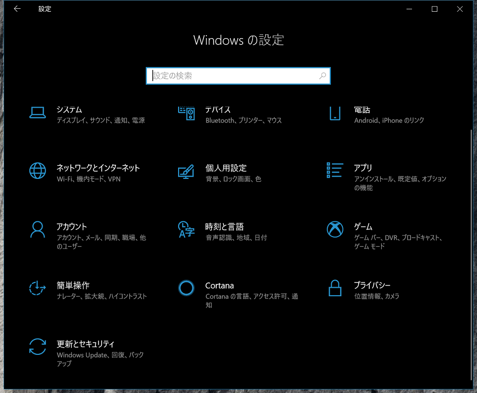
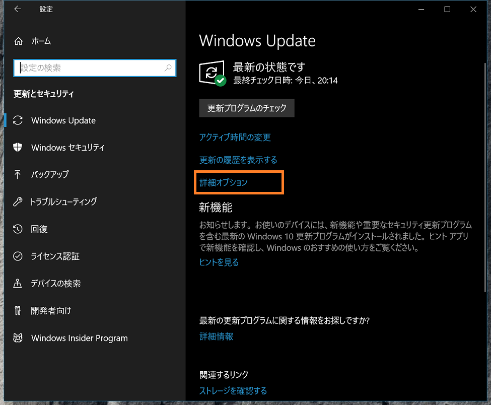
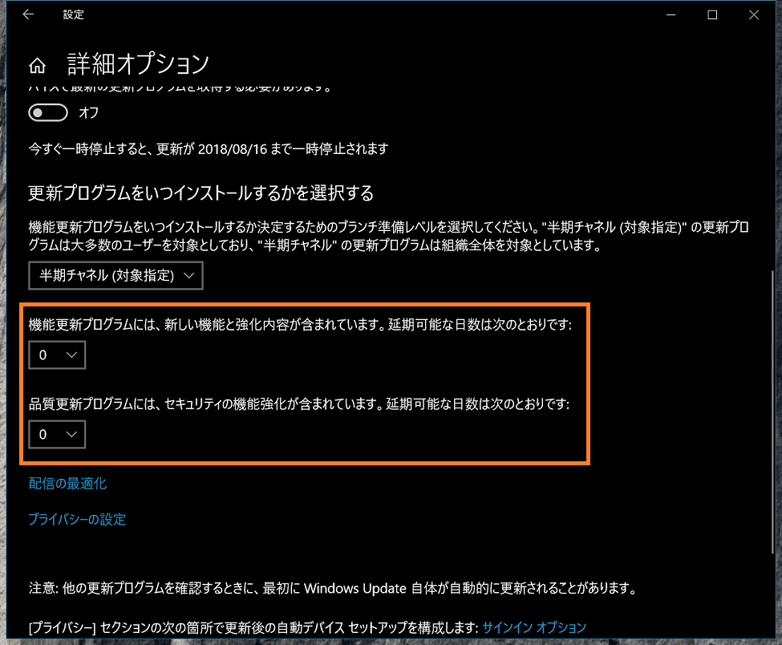

人柱にならないWindows Update
2018-07-11 22:13:11 +0900 JST
Categories: Windows
なにかとトラブルを起こしたり起こさなかったりする毎月恒例行儀のWindows Update。
配信は基本米国時間の第2火曜日と決まっているようですが、デフォルトでは自動更新となっているため、気が付いたら適用されていたというケースも多いのではないでしょうか。
このWindows Update、中には再起不能になったこともあるパッチが出たことも何度かあり、それが発覚するとMicrosoftは配信をストップすることもありました。
つまりWindows Updateの配信日から数日たって停止されないパッチはある程度信頼できるといえるのではないでしょうか。
実はWindows10からはまさにこの「配信日から何日後に適用するか」を設定できるようになっています。
スタート -> 設定 -> 更新とセキュリティ

Windows Update -> 詳細オプション

ここに2つの設定項目があります。0は配信当日に受け取ることができるというものなので、配信から2日間様子を見たいときはここを2に設定します。

2つのうちセキュリティパッチは下になるので、セキュリティパッチだけは気持ち早めに適用したいなんて制御もできます。
これで配信初日に人柱トラブルを受けるリスクがかなり下がると思います。過去に痛い目に遭ったことがある方はぜひ設定してみてください。